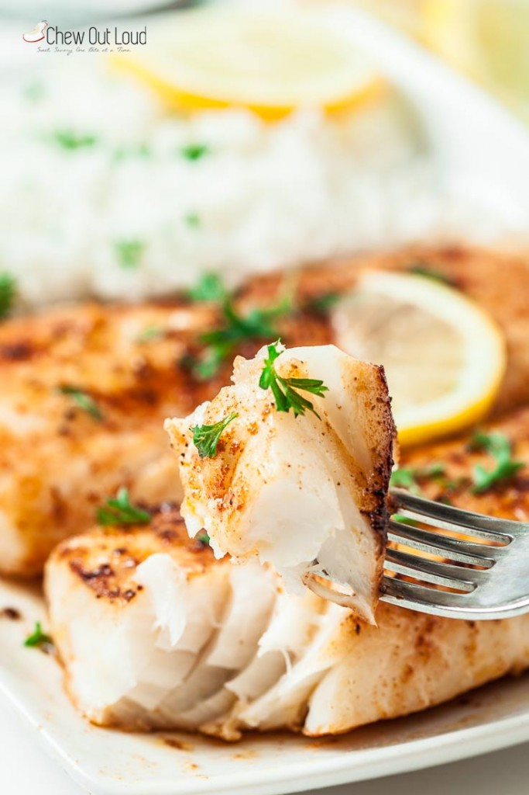

Lemon Butter Fish

Description
This Easy Lemon Butter Fish only takes 20 minutes and a handful of ingredients. It’s a delicious and nutritious
white fish recipe. Pair with rice and vegetables for a healthy weeknight dinner.
Ingredients
- 3 TB melted butter (I use salted, but unsalted is fine)
- uice and zest from 1 medium lemon
- 1 tsp kosher salt, plus extra to taste
- 1 tsp paprika
- 1 tsp garlic powder
- 1 tsp onion powder
- 3 TB olive oil
- 2 tablespoons chopped parsley
- freshly chopped basil or parsley leaves
Steps
- Use paper towels to thoroughly pat-dry excess moisture from fish fillets – this step is crucial for fish to brown nicely in pan. Set aside.
- In a bowl, combine melted butter, lemon juice and zest, and 1/2 tsp kosher salt. Stir to combine well. Taste and add a bit more kosher salt, if desired.
Stir in the rice (to keep it from sticking to the bottom), and cook until the grains are just al dente, 10 to 12 minutes.
- In a separate bowl, combine the remaining 1/2 tsp kosher salt, paprika, garlic powder, onion powder, and black pepper. Evenly press spice mixture onto all sides of fish fillets.
- In a large, heavy pan over medium high heat, heat up the olive oil until hot. Once your oil is sizzling, Cook 2 fish fillets at a time to avoid overcrowding (allows for even browning.) Cook each side just until fish becomes opaque, feels somewhat firm in the center, and is browned – lightly drizzle some of the lemon butter sauce as you cook, reserving the rest for serving. Take care not to over-cook, as that will result in a tougher texture.
Season with extra kosher salt and freshly ground black pepper to taste.
Head Back to Recipe List